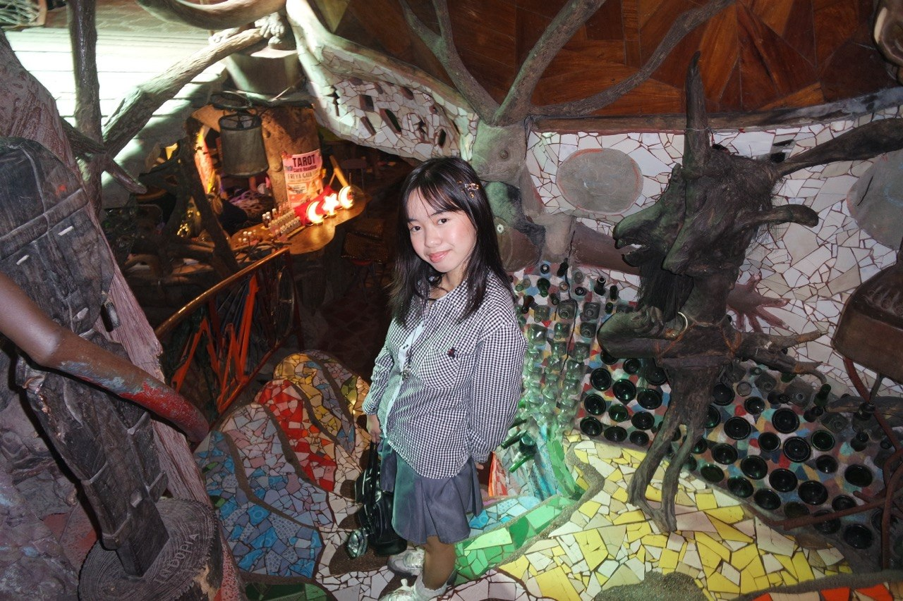

our little story ♡
about chantal's closet
curated treasures, dreamy fits, and whimsical finds from tops to bottoms, shoes, bags, and accessories
chantal
a fashion lover and curator who finds unique thrifted pieces and gives them a new place to shine
every piece in chantal's closet is handpicked with a little whimsy
chantal's closet started from late-night thrift runs and the joy of finding something special hiding on a crowded rack. what began as a personal collection of dreamy vintage pieces turned into a little shop for anyone who loves soft colors, nostalgic fits, and clothes with a story
each item is chosen because it feels like it belongs in someone's everyday magic — a ribbon blouse for coffee dates, a worn-in denim skirt for sunny walks, or a tiny bag that makes any outfit feel complete. this shop is chantal's way of sharing that feeling with you
